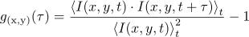
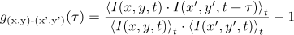
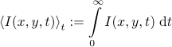

Image Correlation
The imFCS plugin also provides a module that calculates auto- and crosscorrelation functions (ACFs, CCFs) from image series. The image series have to be available in one of these formats:
- multi-frame TIFF file (with 8- or 16-bit greyscale frames that all have the same size)
- RadHard raw format
Additional formats may be available, if reader plugins are installed for them. The imFCS plugin will read in the image series I(x,y,t) (t=0..T-1, x=0..width-1, y=0..height-1) and then calculate the ACFs/CCFs:
- autocorrelation function gx,y(τ) (ACF) for every pixel (x,y)

The result is saved in a comma-separated values (CSV) file basename.autocorrelation.dat, as described here. The pixels are ordered row-major, i.e. the order is
(0,0), (1,0), ...,(width-1,0), (0,1), (1,1), ..., (width-1,1), ..., (width-1, height-1).
- crosscorrelation function g(x,y)-(x',y')(τ) (CCF) for every pixel (x,y) to its neighbor pixels (x',y')

Here the neighbors are the four directly neighboring pixels, i.e. (x',y') = (x-1,y); (x+1,y); (x,y-1); (x,y+1) If a neighboring pixel does not exist, the CCF equals 0 for all values of τ. The result is saved in a comma-separated values (CSV) file basename.crosscorrelation.dat, as described here. The pixels are ordered row-major, i.e. the order is
(0,0), (1,0), ...,(width-1,0), (0,1), (1,1), ..., (width-1,1), ..., (width-1, height-1).
In both cases the averaging operation is defined as:

In addition these properties are also calculated:
- average/overview image: This 16-bit greyscale TIFF image basename.overview.tif contains a per-pixel average over all frames in the image series. The average values are calculated as floating point numbers and then mapped to the range 0..65535 (the smallest average pixel will be 0 and the largest 65535) before saving it to the file.
- video: This 16-bit greyscale multi-frame TIFF file basename.video.tif contains a series of images where each image is the average over a given number of frames (parameter video_frames) from the image series. The video greyscale range is expanded to 0..65535, by the same method as above, but for the whole series.
- statistics: The correlator may calculate a set of statistical parameters from the image series. They are saved as a comma-separated values file basename.statistics.dat of the format:
time [seconds], average, stddev, min, max
Each property is calculated over a range of statistics_frames frames and eachpixel therein. The average averages over all pixels in all of these statistics_frames frames.
- evaluation settings: Finally a human (and computer) readable text file basename.evalsettigs.txt is created. It contains the major settings used for the calculation. It also lists all files created by the evalution. For a detailed description of the file format, see here
$$qf_commondoc_backtop$$